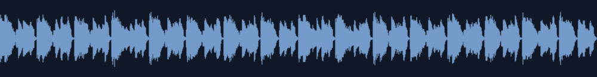

01 窓辺の午後
柔らかな電気鍵盤、ゆったり動くベース、控えめなブラシとベル。少し跳ねるリズムに、余白のある旋律を重ねました。

接続部分だけを確認する4秒の音源（2秒の位置で前周から次周へ）
24秒の短い試聴案（単発／前後120msフェード）
AACの末尾paddingは、測定した秒のloopEndで繰返しから除きます。人間の聴感・Safari出力は未確認です。
旋律・和声・音色を独自に制作した、16小節のBGM候補です。
曲を選ぶと再生します。
柔らかな電気鍵盤、ゆったり動くベース、控えめなブラシとベル。少し跳ねるリズムに、余白のある旋律を重ねました。

接続部分だけを確認する4秒の音源（2秒の位置で前周から次周へ）
24秒の短い試聴案（単発／前後120msフェード）
AACの末尾paddingは、測定した秒のloopEndで繰返しから除きます。人間の聴感・Safari出力は未確認です。